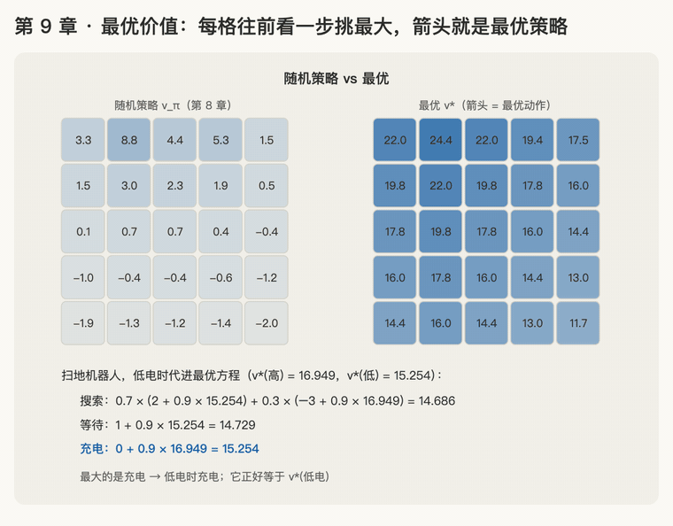

第 9 章 · 最优价值与 Bellman 最优方程：把"平均"换成"挑最好的"
本章回答：什么叫"最好的策略"？最好的策略下价值是多少？知道最优价值以后，怎么直接读出该做什么？
讲解日期：2026-11-13 · 上一章：第 8 章 Bellman 期望方程 · 下一章：第 10 章 策略评估
对应原文：Sutton & Barto §3.6（L4772–L5146，式 3.15–3.20，例 3.8 图 3.5）；CS 285 第 4 讲 L200（value-based 方法估的就是最优策略的价值）
本章缩写：\(v_*\)、\(q_*\)、\(\pi_*\)：星号读"star"（星），表示 optimal（最优）；max = maximum（最大值）；argmax = argument of the maximum（让函数取最大值的那个自变量，即"哪一个最大"）。全部缩写见 附录 · 缩写与术语表
讲解
第一步：什么叫"一个策略比另一个好"（2026-11-13）
问题：两份策略，怎么比谁好？
原文 L4778–L4781 的定义：如果策略 π 在每一个状态的价值都不比 π' 小，就说 π 不比 π' 差：
类比：两个投资方案。 方案甲在每种行情下都至少和乙赚得一样多，那甲就不比乙差。
书里接着说（L4781–L4784）：一定存在至少一个策略，比所有别的策略都好或一样好，它叫最优策略 optimal policy，记作 \(\pi_*\)。最优策略可能不止一个，但它们的价值都一样，叫最优状态价值：
读作："在所有可能的策略里，挑在 s 处价值最大的那个，它的价值就是 \(v_*(s)\)"。同样有最优动作价值 \(q_*(s, a) = \max_\pi q_\pi(s, a)\)（式 3.16）：在 s 先做 a、之后一直按最优策略走的平均回报。
一句话：π 在每个状态都不输 π'，π 就不比 π' 差；最好的那个叫 \(\pi_*\)，它的价值叫 \(v_*\)、\(q_*\)。
第二步：Bellman 最优方程：把"按 π 平均"换成"挑最好的"（2026-11-13）
想一想：最优的智能体在 s 时会怎么选动作？它不会掷骰子，而是直接挑 q 最大的那个。
所以第 8 章 Bellman 期望方程里"按 π 加权平均"那一层，换成"取最大"：
| 第 8 章（期望方程） | 本章（最优方程） | |
|---|---|---|
| 选动作 | \(\sum_a \pi(a \mid s)\,[\dots]\)：按策略平均 | \(\max_a [\dots]\)：挑最好的 |
| 环境那一层 | \(\sum_{s', r} p\,[r + \gamma v(s')]\) | 不变：环境的随机性你管不了 |
Bellman 最优方程（式 3.19，L4829–L4860）：
对 q 的版本（式 3.20，L4895）：
白话：最优价值 = 挑一个动作，让"眼前奖励 + γ × 下一步的最优价值"平均起来最大。
注意环境那层还是平均：动作你能挑，但环境把你送到哪个 s' 你挑不了，只能按概率平均。
一句话：最优方程 = 期望方程把"按 π 平均"换成"取 max"，环境那一层照旧按 p 平均。
第三步：有了 \(v_*\)，往前看一步就知道怎么做（2026-11-13）
问题：机器人低电时，到底该搜索、等待还是充电？
先把机器人的 \(v_*\) 解出来（第 12 章教算法；这里先用结果）：\(v_*(\text{高电}) = 16.949\)，\(v_*(\text{低电}) = 15.254\)。比第 8 章那份策略的价值（15.828、13.869）都高：最优策略当然不比它差。
往前看一步：低电时每个动作代进最优方程的方括号：
| 动作 | 算式 | 结果 |
|---|---|---|
| 搜索 | \(0.7 \times (2 + 0.9 \times 15.254) + 0.3 \times (-3 + 0.9 \times 16.949)\) | 14.686 |
| 等待 | \(1 + 0.9 \times 15.254\) | 14.729 |
| 充电 | \(0 + 0.9 \times 16.949\) | 15.254 |
充电最大，而且正好等于 \(v_*(\text{低电})\)：max 取到的就是它。同样算高电：搜索 16.949 > 等待 16.254，选搜索。
所以最优策略是：高电搜索，低电充电（一份确定性策略，第 6 章第二步）。
这叫"对 \(v_*\) 贪心"（L4941–L4962）：每个状态只往前看一步，挑方括号最大的动作。平时"贪心 greedy"是贬义词（只顾眼前），但 \(v_*\) 已经把以后所有的奖励都算进去了，所以只看一步的贪心，结果在长期看也是最优的。
有 \(q_*\) 更省事（L4963–L4970）：连"往前看一步"都不用，直接挑 \(q_*(s, a)\) 最大的动作；也不需要知道环境的 p。这就是第 16 章 Q-learning 要去学 \(q_*\) 的原因。
一句话：有了 \(v_*\)，每个状态往前看一步挑最大就是最优动作；有了 \(q_*\)，直接挑最大，连 p 都不用知道。
第四步：网格世界的最优解：A 格 24.4（2026-11-13）
例 3.8（L4971–L4975，图 3.5）：还是第 8 章那张 5×5 网格，现在求最优价值：
22.0 24.4 22.0 19.4 17.5
19.8 22.0 19.8 17.8 16.0
17.8 19.8 17.8 16.0 14.4
16.0 17.8 16.0 14.4 13.0
14.4 16.0 14.4 13.0 11.7
和书上图 3.5 中间一模一样。和随机策略（第 8 章：A 格 8.8，角落 −2.0）比，每一格都高得多。
读最优策略：每一格往四个邻居看一步，挑"0 + 0.9 × 邻居价值"最大的方向（A、B 格不管怎么走都一样）：
- A 格（24.4）：随便走，都 +10 传送到 A'（16.0）：\(10 + 0.9 \times 16.0 = 24.4\) ✓；
- A' 正上方那一列一直往上走，回到 A 再拿 +10：最优策略就是"一直绕回 A 刷 +10"；
- 右下角（11.7）：往上（13.0）或往左（13.0）一样好，两个都是最优动作，所以最优策略不止一个（第一步说的）。
为什么不去刷 B 的 +5：B' 走回 B 只要 2 步，但每次只拿 5；A 拿 10，从 A' 走回 A 要 4 步。算下来 A 更划算，\(v_*(A) = 24.4 > v_*(B) = 19.4\)。
原文的提醒（L5070–L5083）：直接解最优方程要三个前提：知道 p、算得动、状态满足马尔可夫。真实问题里经常做不到（双陆棋有 \(10^{20}\) 个状态），所以强化学习通常只能近似地解最优方程。后面所有章节都是在讲怎么近似。
一句话：网格的最优策略是"绕回 A 刷 +10"，A 格 24.4；直接解最优方程要知道 p 且状态不多，现实中只能近似。
动画演示：每格往前看一步挑最大，箭头就是最优策略

可交互版：animations/l09-optimal.html（要能点按钮、拖滑块，需要用本地服务打开，见 animations/README.md"跑起来看"）。
怎么看：
- 左边是随机策略的价值（第 8 章），右边是最优价值 \(v_*\)（图 3.5 中）；
- 每帧挑一格：四个方向各算"奖励 + 0.9 × 邻居 \(v_*\)"，最大的那个亮起，画成箭头（第三步）；
- 全部画完就是最优策略：A' 那一列一路往上指回 A（第四步）；
- 下方小面板是机器人：低电时三个动作的值，充电最大。
练习与作答记录
题 1：机器人高电时，用 \(v_*\) 算"搜索"和"等待"两个动作的值（高电搜索：0.8 → 高电 +2，0.2 → 低电 +2；等待：+1 留在高电），验证搜索更好。
作答：（待作答）
题 2：第二步的两个方程，哪一层从"平均"换成了"max"？哪一层没换？为什么没换？
作答：（待作答）
题 3：网格里 A 格右边那一格的 \(v_*\) 是 22.0。它往左走到 A 是最优动作吗？用"0 + 0.9 × 邻居价值"验证。
作答：（待作答）
口诀
每个状态都不输，才算更好；最好的叫 π；
期望方程按 π 平均，最优方程挑最大，环境那层照旧平均；
有了 v 看一步，有了 q* 直接挑；
网格最优绕回 A，二十四点四。
本章复习卡片
- R15（Bellman 最优方程 式 3.19、3.20：哪一层换成 max、哪一层不变）
- R16（对 \(v_*\) 贪心就是最优；有 \(q_*\) 不用知道 p；机器人最优策略：高电搜索、低电充电）
附录 · 延伸阅读
留给以后深入学习用，不影响本章主线。★ 是建议先读的。L 行号指
materials/text/books/sutton-barto-RLbook2020.txt。
推荐阅读
| 读什么 | 读哪里 | 读它为了什么 |
|---|---|---|
| ★ Sutton & Barto §3.6 | L4772–L4970（式 3.15–3.20、贪心即最优） | 本章原文 |
| ★ Sutton & Barto 例 3.8 | L4971 起，图 3.5（对照 PDF p.65） | 网格最优价值和最优策略 |
| Sutton & Barto 例 3.9 | L5013 起 | 回收机器人的最优方程（用字母 α、β 写的一般形式） |
| Sutton & Barto §3.6 末尾 | L5070–L5090 | 为什么现实中只能近似解（三个前提） |
| CS 285 第 4 讲 | lec-04.txt L195–L207 |
value-based 方法 = 估计最优策略的 Q（第 16–19 章） |
数学原理
- max 让方程变成非线性：第 8 章是一次方程组，可以直接解；max 不是一次运算，第 9 章的方程组只能迭代求解（第 12 章价值迭代）。
- 唯一解：有限 MDP 的最优方程只有一个解 \(v_*\)（L4935），和最优策略有几个无关。
- 贪心策略：\(\pi_*(s) = \arg\max_a \sum_{s', r} p\,[r + \gamma v_*(s')] = \arg\max_a q_*(s, a)\)；argmax 读"让后面那个式子最大的 a"。
- \(v_*\) 与 \(q_*\) 的关系：\(v_*(s) = \max_a q_*(s, a)\)；\(q_*(s, a) = \mathbb{E}[R_{t+1} + \gamma v_*(S_{t+1}) \mid s, a]\)（式 3.17）。
公式清单
| 公式 | 意思 |
|---|---|
| \(v_*(s) = \max_\pi v_\pi(s)\) | 最优状态价值（式 3.15） |
| \(q_*(s, a) = \max_\pi q_\pi(s, a)\) | 最优动作价值（式 3.16） |
| \(v_*(s) = \max_a \sum_{s', r} p\,[r + \gamma v_*(s')]\) | Bellman 最优方程（式 3.19） |
| \(q_*(s, a) = \sum_{s', r} p\,[r + \gamma \max_{a'} q_*(s', a')]\) | q 的最优方程（式 3.20） |
| \(\pi_*(s) = \arg\max_a q_*(s, a)\) | 对 \(q_*\) 贪心就是最优策略 |
代码对照：把本章的数字用代码算一遍
代码在
cs285-deep-rl/solutions/chapter-code/ch09_optimal.py，测试tests/test_ch05_09.py。
同一章的 Jupyter notebook：cs285-deep-rl/solutions/chapter-code/notebooks/ch09_optimal.ipynb（讲解和代码放在一起，一格一格边读边跑；代码都写在格子里，Colab 也能直接打开）。
bash cd cs285-deep-rl/solutions/chapter-code uv run python ch09_optimal.py
| 讲义 | 代码 | 跑出来 |
|---|---|---|
| 机器人 \(v_*\) | optimal_v(P, 0.9) |
16.949、15.254 |
| 往前看一步挑最大 | greedy_actions(P, v, 0.9, s) |
高电 ['搜索']、低电 ['充电'] |
| 网格 \(v_*\) | optimal_v(gridworld_5x5(), 0.9) |
图 3.5 中（A 24.4） |
| 右下角并列最优 | greedy_actions(G, vg, 0.9, 24) |
['↑', '←'] |
关键几行：
new = np.array([max(q_from_v(P, v, gamma, s, a) for a in P[s]) for s in P]) # 最优方程右边
qs = {a: q_from_v(P, v, gamma, s, a) for a in P[s]} # 往前看一步
代码里才看得到的：optimal_v 里那个 while True 循环，就是"从 0 开始反复套最优方程直到不再变"，这正是第 12 章的价值迭代；挑并列最优动作时用 q > best − eps 而不是 ==，因为 16.000000001 和 16.0 在电脑里不相等。
自己改一改（不影响练习答案）：
optimal_v(P, 0.5)→ [3.667, 2.0]，这时greedy_actions(P, v, 0.5, 1)给出的是 ['等待']，不再是 ['充电']：γ 小了，智能体只顾眼前，充电的 0 分不如等待的 +1。最优动作跟着 γ 变。- 把 γ 调回 0.9 再看一遍低电的最优动作，回到 ['充电']。